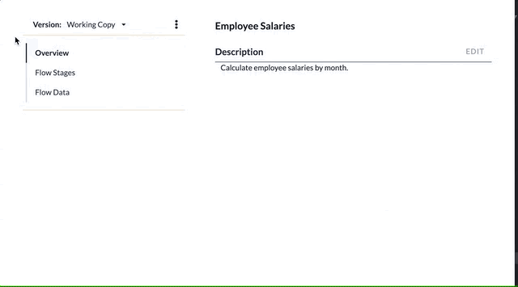

Working Tables
A Working Table is a temporary table with a well-defined structure that exists only for the duration of a Flow. A sequence of stages can be related by the sharing of data. Data is shared, for example, when data written by one stage is used as input to another in the same flow. Working tables are defined within the flow, which means they can be used without explicitly mapping external tables via a Job. Sharing data between stages using working tables is a great way to simplify the logic of your flows by breaking large, complex analyses into component parts.
Create a Working Table
Working Tables are defined within a Flow. Select the Data section and click New Working Table. Give the table a name and optionally a description. You can then begin to define the table's columns.
See also: Configure a Working Table, About Stage Steps